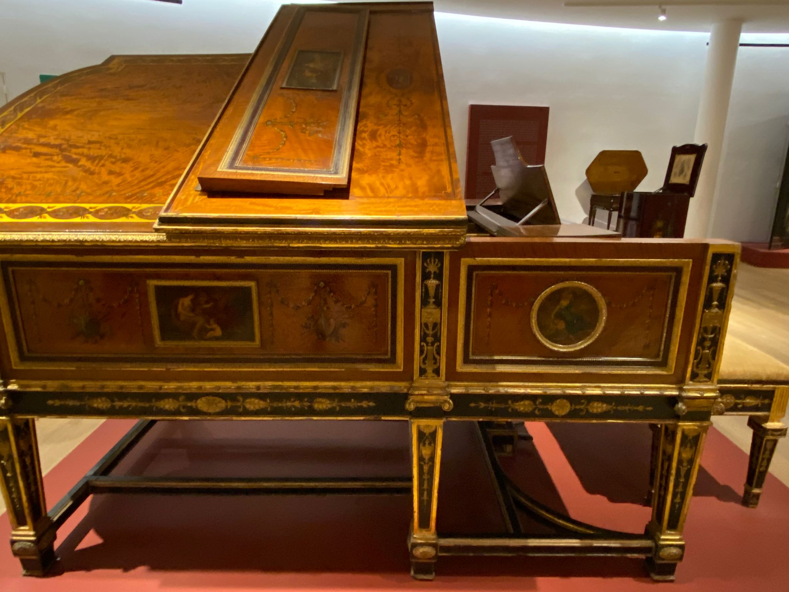
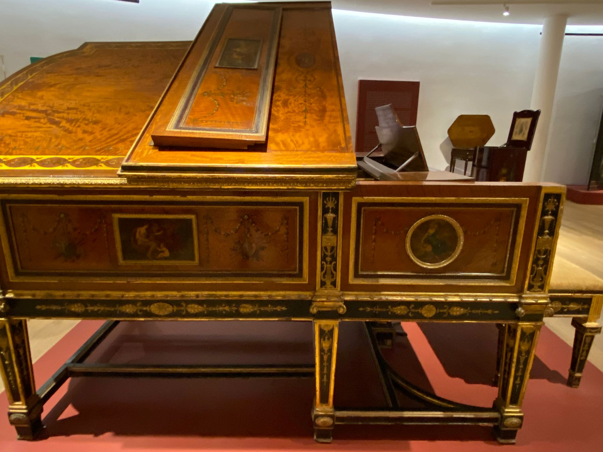

Piano de Cola y Banquillo
Piano de Cola y Banquillo, pertenecio a la princesa otomana Naciye Sultana [1898-1957], nieta del último emperador otomano autónomo Abdulhamid II [1842-1918] Creador: Maple & Co., Ltd, Julius Blüthner & Co. Fecha de creación: 1880/1880 Dimensiones físicas: Piano: 183,7 x 158,3 x 204,4 cm, Banco: 55 x 93,5 x 43 cm
Soporte: Talla en madera policromada. Chapa de arce rayado y palma de caoba. Óleo sobre madera. Aplicación y molduras talladas en tilo con dorado al agua. Mecanismo original del piano en el interior. Teclas de marfil. Banquillo tapizado con terciopelo de seda y tilo tallado con dorado al agua La caja inglesa es de los talleres de Maple & Co. en el Totenham Court Road londinense. Los aderezos evocan el trabajo del ormolú (bronce dorado) dieciochesco y el dibujo neoclásico de pilastras, medallones, urnas y guirnaldas. Las musas siguen los modelos de Angelica Kauffman (1741-1807)
Las manos de Liszt, Rosenthal, Brahms, Jadason, Mahler, Moscheles, Nikisch, Rachmáninov, Schumann y Tchaikovsky tocaron un Blüthner como éste..
 
